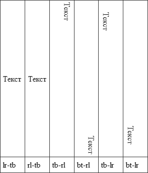

writing-mode
Устанавливает направление текста на странице. Свойство writing-mode является универсальным и позволяет одновременно задавать значения свойств direction и block-progression.
Краткая информация
| Значение по умолчанию | Нет |
|---|---|
| Наследуется | Да |
| Применяется | Ко всем элементам и генерируемому контенту |
Синтаксис
writing-mode: lr-tb | rl-tb | tb-rl | bt-rl | tb-lr | bt-lrЗначения
- lr-tb
- Устанавливает направление текста слева направо.
- rl-tb
- Задает направление текста справа налево.
- tb-rl
- Текст располагается вертикально и выравнивается по верхнему и правому краю.
- bt-rl
- Текст располагается вертикально и выравнивается по нижнему и правому краю.
- tb-lr
- Текст располагается вертикально и выравнивается по верхнему и левому краю.
- bt-lr
- Текст располагается вертикально и выравнивается по нижнему и левому краю.
Влияние разных значений на положение текста в таблице показано на рис. 1.

Рис. 1. Положение текста при разных значениях writing-mode
В табл. 1 показаны значения свойств direction и block-progress, соответствующие значениям writing-mode, а также языки, где они
| writing-mode | direction | block-progress | Для каких языков |
|---|---|---|---|
| lr-tb | ltr | tb | Романских, греческого, кириллических |
| rl-tb | rtl | tb | Арабского, еврейских языков |
| tb-rl | ltr | rl | Азиатских в вертикальном написании |
| bt-rl | ltr | rl | Арабского, вставленного в азиатский документ |
| tb-lr | ltr | rl | Монгольского |
| bt-lr | rtl | rl | Арабского, вставленного в монгольский документ |
Пример
<!DOCTYPE html>
<html>
<head>
<meta charset="utf-8">
<title>writing-mode</title>
<style>
table {
border-collapse: collapse;
height: 350px;
width: 300px;
}
table td {
border: 1px solid #333;
padding: 5px;
}
</style>
</head>
<body>
<table style="width: 100%">
<tr>
<td><p style="writing-mode: lr-tb">Текст</p></td>
<td><p style="writing-mode: rl-tb">Текст</p></td>
<td><p style="writing-mode: tb-rl">Текст</p></td>
<td><p style="writing-mode: bt-rl">Текст</p></td>
<td><p style="writing-mode: tb-lr">Текст</p></td>
<td><p style="writing-mode: bt-lr">Текст</p></td>
</tr>
<tr>
<td>lr-tb</td>
<td>rl-tb</td>
<td>tb-rl</td>
<td>bt-rl</td>
<td>tb-lr</td>
<td>bt-lr</td>
</tr>
</table>
</body>
</html>Объектная модель
Объект.style.writingMode
Примечание
Internet Explorer 6.0 поддерживает только значения lr-tb и tb-rl, Internet Explorer 7.0 поддерживает значения lr-tb, rl-tb, tb-rl, bt-rl.
Chrome, Android и Safari поддерживают свойство -webkit-writing-mode.
Спецификация
| Спецификация | Статус |
|---|---|
| CSS Writing Modes Module Level 3 | Рабочий проект |
Браузеры
| Internet Explorer | Chrome | Opera | Safari | Firefox | |
| 6 | 8 | 15 | 8 | 36 | |
| Android | Firefox Mobile | Opera Mobile | Safari Mobile |
| 4 | 36 | 8 |